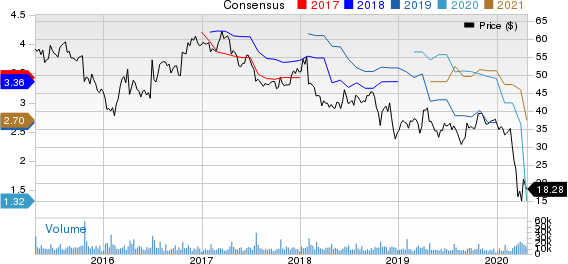

BLOG
Harley-Davidson to show earnings for Q1, but continues its epic slide | What went wrong with this brand?
Even though Harley's freefall as a company continues, it looks like they will actually post earnings for Q1 according to THIS STORY from Yahoo! Finance. That wasn't expected and buys them a little more time in the wake of having recently stopped a partial takeover. Here's hoping they figure out a way to turn things around, but according to the current numbers, it's gonna take more than their few remaining loyalists to save this dinosaur from extinction. That said, Harley has proven itself to have 9 lives in decades past. Let's just hope they're only on No. 8 because America wouldn't be the same without them.

As a motorcyclist of some 42 years now, I've never had any serious interest in owning a Harley-Davidson (though I did entertain the thought building a Hammer Sportster several years ago). However, I do think it is an important American brand and that losing it would have a huge negative affect on the American psyche. It would be the equivalent of losing Chevy or Ford or the Dallas Cowboys. It would not be good.
So what went wrong with Harley? Volumes have been written on this subject already. Sure, the global motorcycle market as a whole is in the shitter right now, but Harley is the only major manufacturer in real danger of folding at the moment. The most important dynamic is probably that they have been rejected by millennials and Gen-Z as relevant. There are a lot of reason for that, from Harley's expensive pricing to a new cultural generation gap that is both wide and deep.
You can't really blame young people for not caring about H-D. Like many of the young people who have outrightly rejected the brand at this point, I've never understood the lure of Harley –– the "mystique", as it is sometimes called. Moreover, I've never understood brand loyalty at all. In fact, I learned to hate it in over 15 years as an advertising agency professional. Brand loyalty is one of the easiest scams in marketing, whereby companies manipulate consumers through their sense of morality. Harley has been doing it for years in an almost predatory way; $1,000 for a Chinese-made jacket, wildly overpriced (yet technologically inferior) bikes, in-house financing that's basically lone-sharking, astronomical labor rates, etc.
None of this is lost on millennials and Gen-Z. They consume 7,000 instances of marketing per day, and the Harley logo is just another piece of advertising clutter to them. They never saw Easy Rider and wouldn't even understand it if they did. They are savvy about being sold to and they don't fall for the same ballyhoo as previous generations. Harley hasn't figured that out.
I've made a big part of my living in the music industry over the past three decades, and to me, Harley is the washed up, egotistical rock star who walks into the nightclub expecting to be the center of attention, only to find itself being ignored by a bunch of young people who've never heard any of the old hits.
H-D better figure something out, and fast.
Leo's 650 Special
A fictional motorcycle short story by Tim Kreitz
Leo Massengill stood quietly in his back yard on a cool but pleasant spring morning, lingering on a stone pathway he had built almost 40 years earlier. It made a semi-circle between the back door of his house and a small driveway leading to the overhead door of his well-weathered garage workshop. He hadn't slept very well the night before and figured his lack of rest was the perfect excuse not to go on a motorcycle ride that morning if he so chose. But the air was fresh, the early sun was beginning to blaze blindingly just above the horizon into a perfectly azure sky, and the birds chirped eagerly in the way they always do when singing away the last vestiges of winter.
'I can't keep putting this off,' he thought. 'That bike has been sitting for six months. I've got to ride it today if I can get it to start. This morning is really pretty –– and I've got to get myself back into the swing of things.'
"Six months," he said aloud, wandering momentarily into a melancholy daydream centered on how quickly time passes. This wasn't the first time Leo had let this motorcycle, a jet black Yamaha 650 Special he purchased brand new in 1979, sit for so long. In fact, he had once let it sit for about a decade from the mid-'80s into the '90s while he was working his ass off and raising kids; a son, Josh, and a daughter, Meg. In fact, he had bought the 650 Special only a couple of weeks before learning Josh was on the way. His then-wife never really liked the idea of Leo having a motorcycle in the first place, and after learning she was pregnant, repeatedly attempted to convince him the bike should be sold.
Leo stuck to his guns and kept it. He stuck to his guns about a lot of things during that marriage. So did she. Neither one of them were good at compromise. They split up in '96 when he found out her mid-life crisis had manifested itself as an extra-marital affair. She quickly moved in with the guy and eventually married him. Despite it all, Leo tried not to hold too big a grudge. He figured he bore as much of the blame as she did for the marriage's failure, maybe more. It had been long since over between them years before her affair, so they both did their best to keep the split friendly and make sure the kids got through the whole mess as well as possible. The upshot was that in the divorce settlement, Leo had managed to hang onto the house –– and the 650 Special.
In the wake of that divorce, Leo got the bike running again. With it he rediscovered his love for motorcycles during a time when he needed riding the most. Soon there was a Harley sitting in the workshop alongside the old Yamaha. That Harley –– a Road King –– stayed for a few years, then got replaced by a Gold Wing, then by a BMW. But he always kept the 650 Special. The bike was just too much a part of him to let it go.
Leo racked up many touring miles over a number of years. It was on a cross-country motorcycle trip during the summer of 2003 when Leo met his second wife, Tanya, at a campground near Colorado Springs. She was eight years younger than him and recently divorced with a college-aged daughter. Tanya told him she liked his bike so he offered to take her for a spin, which she accepted.
It was the happiest ride of Leo's life and lasted almost 18 years. He was never more content and always told everyone how she made him a better person. Leo had finally figured out the whole marriage thing as a middle-aged man. He was much more mature and much less stubborn. But a big part of solving the Zen riddle that was marriage for Leo was in actually finding the right woman, and he had certainly won that lottery the second time around. They were perfect for each other. But very sadly, Tanya died unexpectedly in 2020 from a very rare form of genetic heart failure. Leo was shattered by the ordeal. Losing her was the hardest thing he ever had to endure, and he hadn't ridden the 650 Special a single time since her passing. In fact, he hadn't done much at all but stay home and wait out the winter; not a formula for healing or happiness.
"Jesus, six months," he said again as he shook off the daydream and raised the workshop's overhead door.
Inside the small building amidst a cluttered collection of tools, lawn equipment and old boxes sat Leo's motorcycles; his 650 Special and the high-mileage BMW which had once helped him win his dearly departed soulmate. Since losing Tanya, he had managed to ride the Beemer a few times over the winter when the weather was cooperative. But for some reason, he could never bring himself to fire up the 650. The only thing he had managed to do was keep air in the tires. He wasn't quite sure why he had avoided the bike, but the moment he grabbed onto the handgrips and pushed the 650 out of the workshop and into the sunshine, the reason became clear.
As Leo sat on the 650 Special and looked down at its instruments, it was suddenly 1979 all over again. A flood of old memories rushed in of that cocky 28-year-old kid who wasn't about to give up his first motorcycle just because his wife was pregnant. He was so confident that her concerns were nonsense and that he could easily be both a dad and a free-spirit at the same time. He was sure nothing was going to change. Everything changed.
He rested his hands on the tank and remembered a period during his thirties when there was absolutely no time to ride. There was only work and stress and bills and bullshit. A lot of yelling and arguing from that time period reverberated at a distance in his mind. The 650 Special sat in the back corner of his workshop during those years, covered in a bed sheet and for a while with two boxes full of old baby clothes stacked on the seat. He remembered having almost sold it to a neighbor at one point. Maybe he should've let it go at the time, but was glad he never did. The thought of that bike being ever in his possession, even comatose and covered in junk, had kept him sane a few times in his life. Even in its worst condition, it had been dusty hope and a protracted conduit back to Leo's bygone youth.
The memories kept coming as he gave the 650 Special a mentally distracted once-over. There were old thoughts of 60-hour work weeks, his divorce, getting the 650 Special running again thereafter, meeting Tanya, marrying Tanya, losing Tanya, attempting to pick up the pieces, and everything in between. Friends had come and gone. He had worked 27 years at a job he hated and thankfully made it through to full retirement without getting himself fired. Josh and Meg had grown up and moved away. Neither had married or become parents and Leo wondered if he was somehow to blame for that. But through it all, the 650 Special was there.
Leo turned on the ignition and got lights, but the battery was too weak for the starter button. He choked it, twisted the throttle a few times, and flipped the kick-starter outward.
One kick, two kicks, three kicks, nine kicks, fifteen kicks and nothing; he couldn't even get a sputter. He tried again but Leo was quickly getting tired, and worse, he was getting upset. He would be 70 years old soon and repeatedly kicking the 650 Special was becoming physically difficult. It hurt, and the more Leo kicked, the more he kept thinking about just how alone he was. Just when he needed it to the most, the one thing that had been a constant in his life for over four decades refused to cooperate. He kicked a few more times, then sat down on the seat to rest for a minute just as a tear fell from his cheek and hit the top of the gas tank. He watched it roll down and onto the seat. The exertion, the frustration, the memories, and the lack of sleep had all culminated in that moment.
It took some time, but Leo finally calmed himself down. He had waited too long to run the bike, he reckoned. The carburetors would have to be pulled off and cleaned.
"We are officially old, you and I," Leo said quietly. "I'm sorry I neglected you. I'm sorry about a lot of things. Forgive me? Okay then, we'll try it another day."
Leo shut off the key and reached down to close the petcock. That's when he realized he had forgotten to open it in the first place. He instantly felt a little stupid. He'd brought himself to the brink of tears over a bunch of self-indulgent nostalgia and a closed fuel valve.
"It's been six months alright," he said with a sigh, cracking something approaching half a grin and opening the petcock.
Several kicks later, the 650 Special lit off and Leo was soon rolling down the driveway. She wasn't idling too well and protested a bit as he pulled onto the road. He turned west with his back toward the warmth of the sun and started accelerating through the gears. Those carbs would definitely need some work, but she'd be fine for a short ride into town.
With the wind in his hair and the 650's engine singing its familiar song into Leo's ears, better memories began to fill his head. He thought of past rides with dear friends and of the riding group he had first hooked up with shortly after buying the bike in '79. Gosh, it was such a great bunch of guys. He shared a lot of miles and a lot of laughs with that crew back in the day. One or two nights a week after work, they'd ride from early evening until around midnight, usually ending the festivities with a late-night slice of apple pie at an old truck stop just off the Interstate. That truck stop was long gone now. Most of those guys were long gone, too, in one way or another. Some had passed away. Others had moved away. Still others had given up motorcycling. But not Leo. He was still able to ride, though not as far or fast as he used to. In fact, the thought of having to eventually give up motorcycles due to either age or illness had crossed his mind many times in recent years. He knew the day would arrive at some point, but not today. He also knew he'd be sore tomorrow from all that kicking, but felt good enough right now, and now was the only thing there really was anyway.
Leo remembered how much Tanya had loved to ride with him. He missed her so badly, and he knew she'd want him to keep enjoying life for as long as possible. He was determined to try, and as he turned onto the highway that led to his favorite coffee shop in town, a wonderful thing happened: Leo found himself completely in the moment. It was just him and his 650 Special. There was no soreness or tiredness or sadness or worry. For the first time in what seemed like forever, he felt like he might be happy again someday.
At the stoplight just before the coffee shop, Leo waited for the light to turn green. As he sat there blipping the throttle through the 650's rough idle, he noticed movement in the passenger seat of the car next to him. It was a little kid waving, a blonde-headed boy who was maybe eight years old. Leo waved back with a grin as the boy's mom lowered the passenger window.
"I like your motorcycle!" the boy exclaimed excitedly. "I'm gonna get one someday!"
"That's wonderful, young man," Leo replied. "I promise you'll love it. Have a good day, now."
Leo pulled into a parking spot in front of the coffee shop and dismounted his 650 Special, staring at it momentarily before heading in the door. Once inside, he'd sit at a table where he could continue to stare at it through the coffee shop's big plate-glass windows. That never got old. Some things never really get old, Leo reckoned, even despite their undeniable age.
He went inside and ordered some coffee –– and a slice of apple pie.